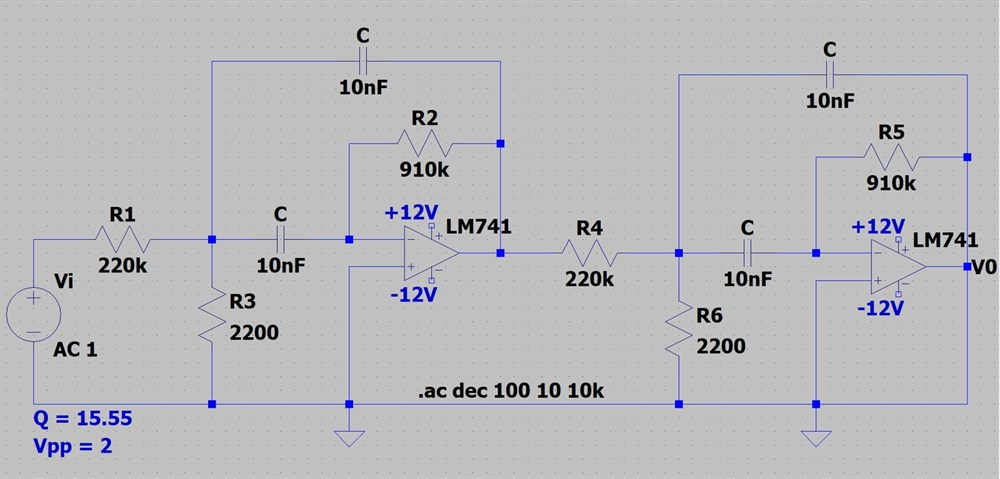

Project · Analog Signal Processing
Spring 2026 · Principles of EE II Lab
Two-Stage Active Bandpass Filter
Twelve Morse code messages share one pair of wires, each on its own frequency. Pull out the message at 351 Hz.
ToolsLTspice · LM741 op-amps · oscilloscope · active filter design
- 351 Hztarget frequency
- Q = 15.55up from 6, then 10
- 2 stagescascaded op-amp filters
- "RLC"message decoded


What I did
- More Q from one stage would have needed resistors over 1 MΩ and risked ringing, so we cascaded two Q = 10 stages.
- Cascading shrank the bandwidth to 64.3% of one stage (35.1 Hz to 22.6 Hz), for a combined Q of 15.55.
- Simulated in LTspice first: the peak landed at 354.9 Hz and 12.4 dB, matching two gain-of-2 stages.
My role
Team of two. Filter design math, simulation, bench build, and scope measurements.
Debugging
Found a part wired to the op-amp's negative supply pin instead of its inverting input, then tuned the scope timebase until the dots and dashes were readable.
Takeaway
Simulate before you build, and check pinouts first when hardware disagrees.